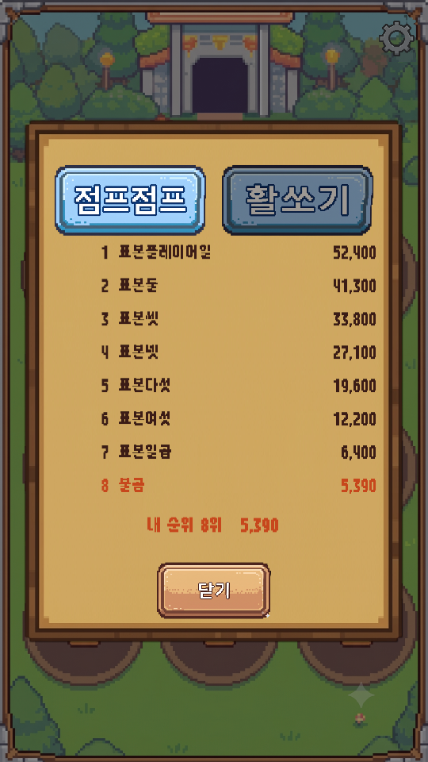
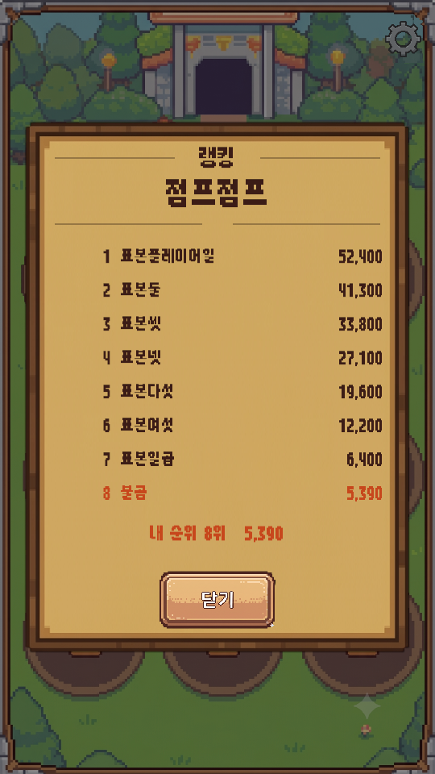
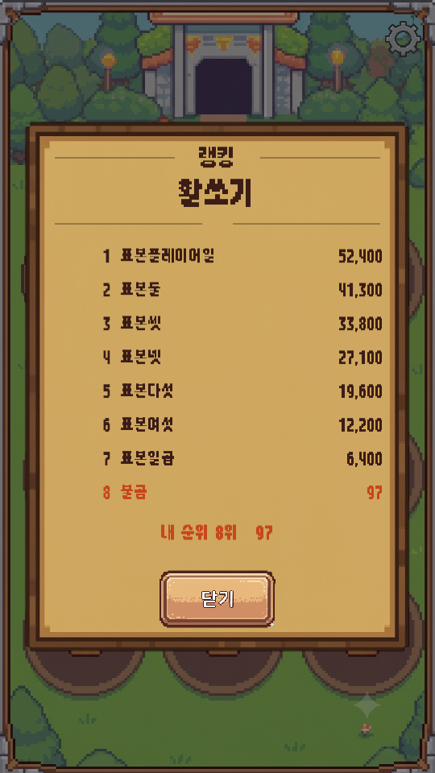
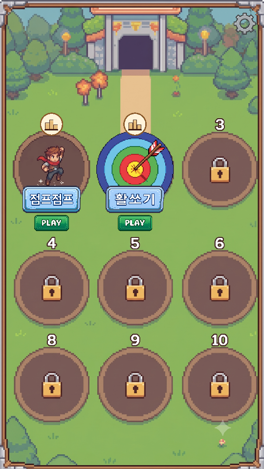
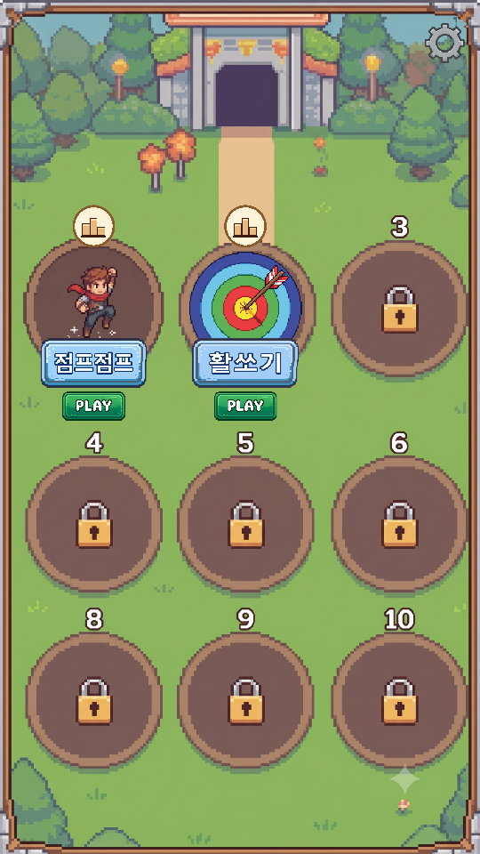
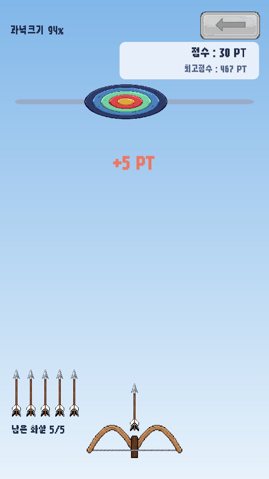
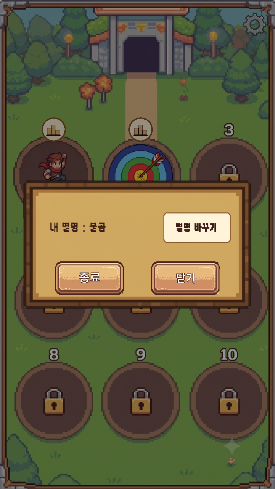
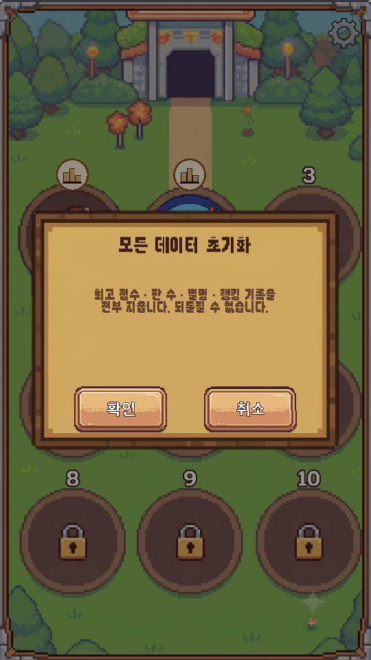

<title>수정사항_03 · 초기화 치트</title>
<meta charset="utf-8">
<style>
  :root{
    --bg:#f7f6f3; --card:#fff; --ink:#1c1b19; --muted:#6b6862;
    --line:#e3e0da; --accent:#c2410c; --ok:#15803d; --warn:#b45309;
  }
  @media (prefers-color-scheme:dark){:root:not([data-theme="light"]){
    --bg:#16151a; --card:#1f1e24; --ink:#eceaf0; --muted:#a3a0ab;
    --line:#33313b; --accent:#fb923c; --ok:#4ade80; --warn:#fbbf24;
  }}
  :root[data-theme="dark"]{
    --bg:#16151a; --card:#1f1e24; --ink:#eceaf0; --muted:#a3a0ab;
    --line:#33313b; --accent:#fb923c; --ok:#4ade80; --warn:#fbbf24;
  }
  body{background:var(--bg);color:var(--ink);font:16px/1.65 "Malgun Gothic","Segoe UI",system-ui,sans-serif;
       margin:0;padding:40px 20px 80px}
  main{max-width:880px;margin:0 auto}
  h1{font-size:28px;line-height:1.3;margin:0 0 6px;letter-spacing:-.02em}
  .sub{color:var(--muted);margin:0 0 36px;font-size:14px}
  h2{font-size:19px;margin:44px 0 14px;padding-bottom:8px;border-bottom:2px solid var(--line)}
  h3{font-size:15px;margin:26px 0 8px;color:var(--accent)}
  section{background:var(--card);border:1px solid var(--line);border-radius:12px;padding:4px 24px 24px;margin-bottom:8px}
  .tw{overflow-x:auto;margin:14px 0}
  table{border-collapse:collapse;width:100%;font-size:14px;min-width:460px}
  th,td{padding:7px 10px;text-align:left;border-bottom:1px solid var(--line);vertical-align:top}
  th{font-weight:600;color:var(--muted);font-size:12.5px;text-transform:uppercase;letter-spacing:.04em}
  tr:last-child td{border-bottom:none}
  code{background:var(--bg);border:1px solid var(--line);border-radius:4px;padding:1px 5px;font-size:13px;
       font-family:Consolas,"Cascadia Mono",monospace}
  ul{padding-left:20px} li{margin:6px 0}
  ol{padding-left:22px} ol li{margin:8px 0}
  .tag{display:inline-block;font-size:12px;padding:2px 9px;border-radius:99px;border:1px solid currentColor;
       font-weight:600;vertical-align:middle;white-space:nowrap}
  .ok{color:var(--ok)} .warn{color:var(--warn)}
  .note{border-left:3px solid var(--warn);background:var(--bg);padding:12px 16px;border-radius:0 8px 8px 0;margin:16px 0}
  .note p{margin:6px 0}
  .lead{font-size:17px}
  figure{margin:0}
  .shots{display:flex;gap:14px;flex-wrap:wrap;margin:18px 0}
  .shots figure{flex:1 1 220px;max-width:270px}
  .shots img{width:100%;display:block;border:1px solid var(--line);border-radius:8px}
  .shots figcaption{font-size:12.5px;color:var(--muted);margin-top:8px;text-align:center;line-height:1.5}
</style>

<main>
<h1>수정사항_03 반영 · 데이터 초기화 치트</h1>
<p class="sub">심심할 때 하는 게임 &middot; 2026-09-11 저녁 &middot; <code>수정사항_03.pdf</code> 4건 + 치트 &middot; 배치 모드 + 실제 서버 검증 완료</p>

<section>
<h2>한눈에</h2>
<div class="tw"><table>
<tr><th>#</th><th>요청</th><th>결과</th></tr>
<tr><td>1</td><td>랭킹 창 — 이름표 그림이 아니라 게임 제목을 글자로만</td><td><span class="tag ok">반영</span> "── 랭킹 ──" 아래 게임 이름</td></tr>
<tr><td>2</td><td>로비 — 아이콘을 줄여서 갈색 테두리가 보이게</td><td><span class="tag ok">반영</span> 활쏘기 아이콘 0.8배</td></tr>
<tr><td>3</td><td>로비로 가기 버튼 0.7배</td><td><span class="tag ok">반영</span> 두 게임 모두</td></tr>
<tr><td>4</td><td>과녁이 선 끝까지 이동</td><td><span class="tag ok">반영</span> 선을 과녁이 가는 폭에 맞춤</td></tr>
<tr><td>+</td><td>모든 게임 데이터를 초기화하는 치트</td><td><span class="tag ok">추가</span> 설정 창 빈 윗부분 3초 안에 5번</td></tr>
</table></div>
</section>

<section>
<h2>1. 랭킹 창 — 게임 이름을 글자로</h2>
<p>그려 주신 대로 위쪽을 <strong>"── 랭킹 ──" / 게임 이름 / 가는 줄 두 개</strong>로 바꿨습니다.
이름표 그림 두 장(탭)은 없앴습니다. 게임 칸마다 랭킹 아이콘이 생겨서, 창 안에서 다른 게임으로 갈아탈 필요가 없어졌기 때문입니다.</p>
<p>게임 이름은 <code>strings.csv</code> 의 <code>game.jumpjump.name</code> / <code>game.archery.name</code> 줄에서 옵니다. 문구를 바꾸려면 그 줄만 고치시면 됩니다.
<strong>새 미니게임을 추가하면 이 줄도 하나 넣어야 합니다</strong> (없으면 카탈로그의 이름이 대신 나옵니다).</p>
<div class="shots">
<figure><figcaption>전 &mdash; 이름표 그림 탭</figcaption></figure>
<figure><figcaption>후 &mdash; 점프점프 칸의 아이콘으로 열었을 때</figcaption></figure>
<figure><figcaption>후 &mdash; 활쏘기 칸의 아이콘으로 열었을 때</figcaption></figure>
</div>
<p style="font-size:13.5px;color:var(--muted)">(첫 번째 "후" 캡처는 "랭킹" 글자가 들어가기 전에 찍힌 것입니다. 캡처에서만 빠지던 문제를 고친 뒤의 모습이 세 번째 캡처입니다 — 실제 게임에서는 둘 다 나옵니다)</p>
</section>

<section>
<h2>2. 로비 — 활쏘기 아이콘을 테두리 안쪽으로</h2>
<p>점프점프 아이콘은 <strong>그림 안에 칸 테두리까지 그려져</strong> 있어서 칸을 꽉 채워도 테두리가 보이는데,
활쏘기 아이콘(과녁)은 꽉 찬 원이라 배경의 갈색 테두리를 덮고 있었습니다.
로비 그림에서 테두리 안쪽 지름을 재 보니 <strong>칸 폭의 0.84</strong>였고, 활쏘기 아이콘을 그 안에 들어가게 <strong>0.8배</strong>로 줄였습니다.</p>
<p><strong>게임마다 아이콘 크기를 따로 줄 수 있게</strong> 만들었습니다 — <code>GameCatalog.asset</code> 의 <code>iconScale</code>.
나중에 게임을 추가하실 때 아이콘이 테두리를 덮으면 이 값을 0.8 쯤으로 두시면 됩니다.</p>
<div class="note"><p><strong>"아이콘" 을 게임 아이콘(과녁)으로 이해했습니다.</strong> 혹시 번호 자리의 랭킹 아이콘(동그란 받침)을 말씀하신 거라면 알려 주세요.</p></div>
<div class="shots">
<figure><figcaption>전 &mdash; 과녁이 갈색 테두리를 덮음</figcaption></figure>
<figure><figcaption>후 &mdash; 과녁 둘레로 테두리가 보임</figcaption></figure>
</div>
</section>

<section>
<h2>3 · 4. 활쏘기 — 로비로 가기 버튼 · 과녁 선</h2>
<p><strong>← 버튼</strong>을 0.7배로 줄였습니다. 이 버튼은 모든 미니게임이 한 곳에서 같이 만들기 때문에 <strong>점프점프도 같이 작아졌습니다</strong> — 게임마다 모양이 같아야 해서요.</p>
<p><strong>과녁 선</strong> — 과녁은 가장자리가 좌우 한계에 닿으면 튕기는데, 선은 그보다 양쪽으로 조금씩 더 길게 그려져 있었습니다.
그래서 과녁이 선 끝까지 가지 않고 중간에서 돌아오는 것처럼 보였습니다.
이제 <strong>선 길이를 과녁이 가는 폭에 딱 맞춰</strong> 그려서, 과녁 가장자리가 선 끝에 닿을 때 돌아옵니다.</p>
<p>선이 짧아져 보이지 않도록 좌우 한계를 <strong>3.2 → 3.4</strong> 로 조금 넓혔습니다 (가장 길쭉한 21:9 폰에서도 화면 안에 들어오는 최대치).
과녁이 조금 더 넓게 움직이게 되었습니다. 되돌리시려면 <code>ArcheryConfig.asset</code> 의 <code>playHalfWidth</code> 를 3.2 로 하시면 됩니다.</p>
<div class="shots">
<figure><figcaption>전</figcaption></figure>
<figure><figcaption>후 &mdash; 작아진 ← · 선 끝 = 과녁이 돌아오는 자리</figcaption></figure>
</div>
</section>

<section>
<h2>+ 치트 — 모든 게임 데이터 초기화</h2>
<p class="lead"><strong>로비 톱니바퀴 → 설정 창의 빈 윗부분을 3초 안에 5번</strong> 누르면 확인 창이 뜹니다.</p>
<p>일반 사용자가 우연히 열지 않도록 숨겨 두었습니다. [확인] 을 누르면</p>
<ol>
<li><strong>서버의 내 기록</strong> — 게임마다 내 랭킹 줄, 내 별명 자리, 익명 계정을 지우고</li>
<li><strong>폰 안의 기록</strong> — 최고 점수 · 판 수 · 광고 카운트 · 별명 · 로그인 정보를 전부 지운 뒤</li>
<li>타이틀 화면으로 돌아갑니다. <strong>앱을 막 설치한 상태</strong>가 됩니다.</li>
</ol>
<p>인터넷이 안 되면 폰 안의 기록만 지우고 "서버에 닿지 못함" 이라고 알려 드립니다.</p>
<div class="shots">
<figure><figcaption>설정 창 &mdash; "내 별명" 줄 위의 빈 곳을 5번</figcaption></figure>
<figure><figcaption>뜨는 확인 창</figcaption></figure>
</div>
<div class="note">
<p><strong>출시 전 시험 기록 정리에 그대로 쓰시면 됩니다.</strong> 시험하신 폰마다 이 치트를 한 번씩 누르면 그 폰의 기록이 실제 랭킹에서 사라집니다.
에디터에서 시험하신 기록은 에디터에서 Play 한 뒤 같은 치트를 쓰세요.
(에디터 메뉴 <strong>Tools &gt; Arcade &gt; Reset All Game Data (Editor)</strong> 도 있는데, 이것은 에디터 기록만 지우고 서버는 안 지웁니다)</p>
<p><strong>스토어 빌드에서는 끕니다</strong> — <code>ArcadeConfig.asset</code> 의 <code>cheatsEnabled</code>. 테스트 광고를 끌 때 같이 끄겠습니다.
누르는 횟수와 시간도 같은 곳(<code>cheatTaps</code> / <code>cheatTapSeconds</code>)에서 바꿉니다.</p>
</div>
</section>

<section>
<h2>검증</h2>
<div class="tw"><table>
<tr><th>무엇</th><th>결과</th></tr>
<tr><td>컴파일 + 씬 4장</td><td><span class="tag ok">오류 0</span></td></tr>
<tr><td>자체 점검 41 → <strong>44건</strong></td><td><span class="tag ok">전부 통과</span> 랭킹 창에 탭 없음 · 게임 이름 글자 · 치트는 5번째에 열림 · 활쏘기 아이콘 크기 · 숫자 칸 버그 재발 방지</td></tr>
<tr><td>서버 점검 19건 (실제 Firebase)</td><td><span class="tag ok">전부 통과</span> <strong>치트가 서버의 시험 계정 기록을 지우고, 남은 것이 없음</strong>을 확인</td></tr>
<tr><td>점프점프 플레이테스트</td><td><span class="tag ok">정상</span></td></tr>
<tr><td>활쏘기 플레이테스트</td><td><span class="tag ok">정상</span> 조준 봇 명중률 100% (범위가 넓어져 기다리는 시간이 늘어 120초 동안 96 → 87발)</td></tr>
</table></div>
<div class="note"><p><strong>자체 점검은 치트로 실제로 지우지는 않습니다.</strong> 돌릴 때마다 에디터에 저장된 사용자님 기록("불곰" 등)이 날아가기 때문입니다.
열리는 조건만 확인하고, 서버 쪽 삭제는 시험 계정으로 서버 점검에서 확인했습니다.</p></div>
</section>
</main>
